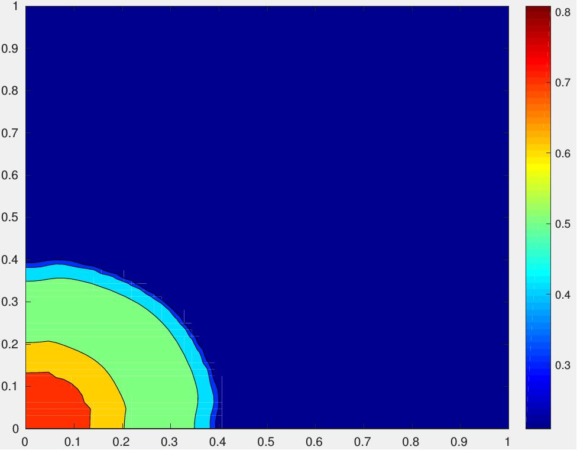
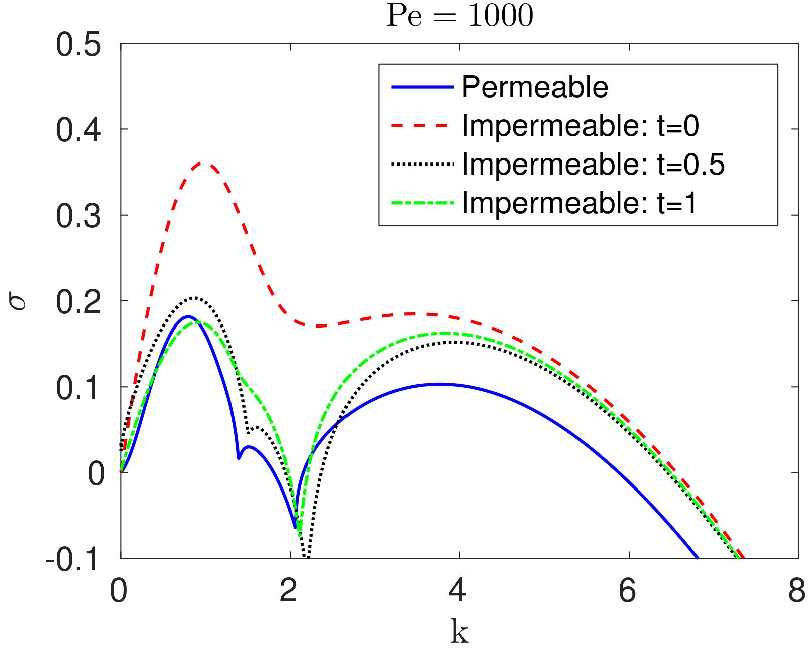
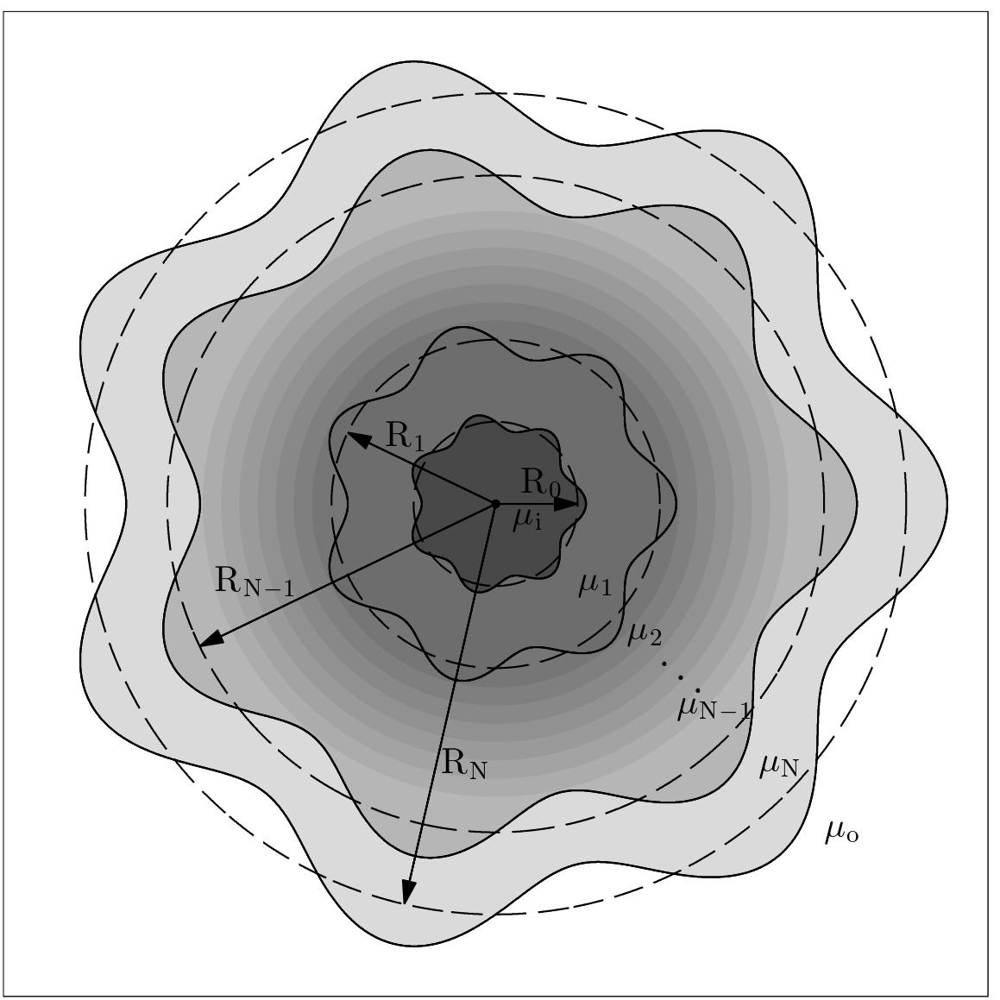

Below you find brief descriptions of some of our recent works in this area. For more see Publications on this topic

Convergence analysis of a characteristics-based hybrid method for multicomponent transport in porous media, (Joint work with my student Sourav Dutta) A detailed convergence study is performed for a new hybrid method of solving the system of equations that govern the multicomponent flow of two incompressible, immiscible fluid phases through porous media. The theoretical convergence rates obtained are supported by two types of numerical experiments. Firstly, the numerical solution is compared to an imposed two dimensional analytical solution with successive spatial and time grid refinement. In the second set of experiments, numerical results obtained with the finest spatial grid are compared with results on a sequence of coarser spatial grids while simulating a realistic quarter five-spot reservoir flood problem. A link to the reference of the related paper will be provided here after it apepars in the journal.

Studies on Dispersive Stabilization of Porous Media Flows (Joint work with Craig Gin) Motivated by a need to improve the performance of chemical enhanced oil recovery (EOR) processes, we investigate dispersive effects on the linear stability of three-layer porous media flow models of EOR for two different types of interfaces: permeable and impermeable interfaces. Results presented are relevant for the design of smarter interfaces in the available parameter space of Capillary number, Peclet number, longitudinal and transverse dispersion and the viscous profile of the middle layer. The stabilization capacity of each of these two interfaces is explored numerically and conditions for complete dispersive stabilization are identified for each of these two types of interfaces. Key results obtained are: (i) three-layer porous media flows with permeable interfaces can be almost completely stabilized by diffusion if the optimal viscous profile is chosen; (ii) flows with impermeable interfaces can also be almost completely stabilized for short time, but become more unstable at later times because diffusion flattens out the basic viscous profile; (iii) diffusion stabilizes short waves more than long waves which leads to a ``turning point'' Peclet number at which short and long waves have the same growth rate; and (iv) mechanical dispersion further stabilizes flows with permeable interfaces but in some cases has a destabilizing effect for flows with impermeable interfaces, which is a surprising result. These results are then used to give a comparison of the two types of interfaces. It is found that for most values of the flow parameters, permeable interfaces suppresses flow instability more than impermeable interfaces.
Modeling and Simulation of Surfactant Polymer Flooding using a New Hybrid Method, J. Comp. Phys, 335, pp. 249-282, 2017; doi:10.1016/j.jcp.2017.01.038 (Joint work with Sourav Dutta) Chemical enhanced oil recovery by surfactant-polymer flooding has been studied in two space dimensions. A two-phase porous media flow model has been proposed that incorporates the effect of capillary pressure and also the effect of polymer and surfactant on viscosity, interfacial tension and relative permeabilities of the two phases. A new global pressure for the two-phase, incompressible, immiscible, multicomponent porous media flow has been defined so that the equation for the global pressure remains same as the one for the pressure in the absence of the capillary pressure. This canonical form of the equation is solved more efficiently for the global pressure from which the phase pressures are easily recovered. The coupled system of equations for pressure, water saturation, polymer concentration and surfactant concentration is solved using a hybrid method in which the elliptic global pressure equation is solved using a discontinuous finite element method and the transport equations for water saturation and concentrations of the components are solved by a Modified Method Of Characteristics (MMOC). Numerical simulations have been performed to qualitatively validate the method and to evaluate the relative performance of various flooding schemes for several heterogeneous reservoirs.
Fingering in Porous Media:
Modeling and Simulation of Surfactant Polymer Flooding using a New Hybrid Method, J. Comp. Phys, 335, pp. 249-282, 2017; doi:10.1016/j.jcp.2017.01.038 (Joint work with Sourav Dutta) Description of the video: Comparison of secondary recovery (waterflood) with polymer and surfactant based enhanced oil recovery in a rectangular geometry with a heterogeneous permeability field. The time evolution of the water saturation contours are shown, with higher water saturation values depicted in red. A careful study of the composition of the injected fluid phases allows us to predict the relative efficiencies of these processes in partially suppressing the finger formations. The simulations have been produced by a code developed in-house by the method described in the above paper.

Stability Results for Multi-Layer Radial Hele-Shaw and Porous Media Flows (Joint work with Craig Gin) Motivated by stability problems arising in the context of chemical enhanced oil recovery, we perform linear stability analysis of Hele-Shaw and porous media flows in radial geometry involving an arbitrary number of immiscible fluids. Key stability results obtained and their relevance to the stabilization of fingering instability are discussed. Some of the key results, among many others, are: (i) absolute upper bounds on the growth rate in terms of the problem data; (ii) validation of these upper bound results against exact computation for the case of three-layer flows; (iii) stability enhancing injection policies; (iv) asymptotic limits that reduce these radial flow results to similar results for rectilinear flows; and (v) the destabilizing effect of curvature of the interfaces. Multi-layer radial flows have been found to have the following additional distinguishing features in comparison to rectilinear flows: (i) very long waves, some of which can be physically meaningful, are stable; and (ii) eigenvalues can be complex for some waves depending on the problem data, implying that the dispersion curves for one or more unstable waves can contact each other. Similar to the rectilinear case, these results can be useful in providing insight into the interfacial instability transfer mechanism as the problem data is varied. Moreover, these can be useful in devising smart injection policies as well as controlling the complexity of the long-term dynamics when drops of various immiscible fluids intersperse among each other. As an application of the upper bound results, we provide stabilization criteria and design an almost stable multi-layer system by adding many layers of fluid with small positive jumps in viscosity in the direction of the basic flow.